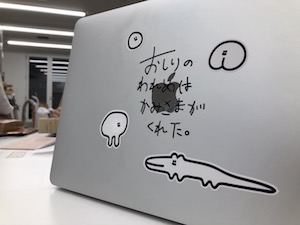
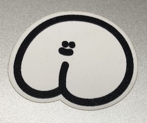
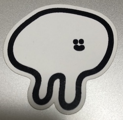
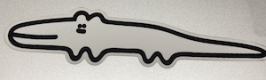

結果
１回目は順調にカッティングを終え,リタックに引っ付ける際に
パーツがあまりにも小さすぎてどこかに消えてしまった。
２回目は１回目の反省を活かして、サイズを一回り大きくし
リタックの際はより慎重に行った。すると綺麗に取ることができた。
学び
複雑なデザインや、切り取るラインが細いデザインは、
カッティングプロッターがきっている最中に切り取るロール紙を
巻き込んでしまった。なので改善策として、
大きさを大きくすることと、刃の動きの速度を遅くすることをやった。
すると前よりかは綺麗に切ることができたが、巻き込まれているところは
何箇所かあった。
リタックの粘着力が強すぎて貼りたいものに貼っても、
なかなかリタックからステッカーが剥がれなくて苦戦した。
カッティングの場所を変更する際は原点の位置を変えるのを忘れがち！
変えても決定ボタンを押し忘れてしまうことがある。
※自分は他の人の手伝いや頼まれたデータでの作成をやっていたので
動画や写真を取ることができなかった。また他の人が作成してくれたデータが
どこを切るのか、どこを残すのかを勘違いしている人が多く
データの作り直すのが大変でした！なので作る時は気をつけよう。
応用
個人的にカッティングプロッターの性能を利用して
プリンターで印刷したステッカーシールをトンボを利用して
カッティングプロッターで読み込み綺麗に切ってもらいました。
その場合のデータの作成方法も変わってくるので今度書きます。


